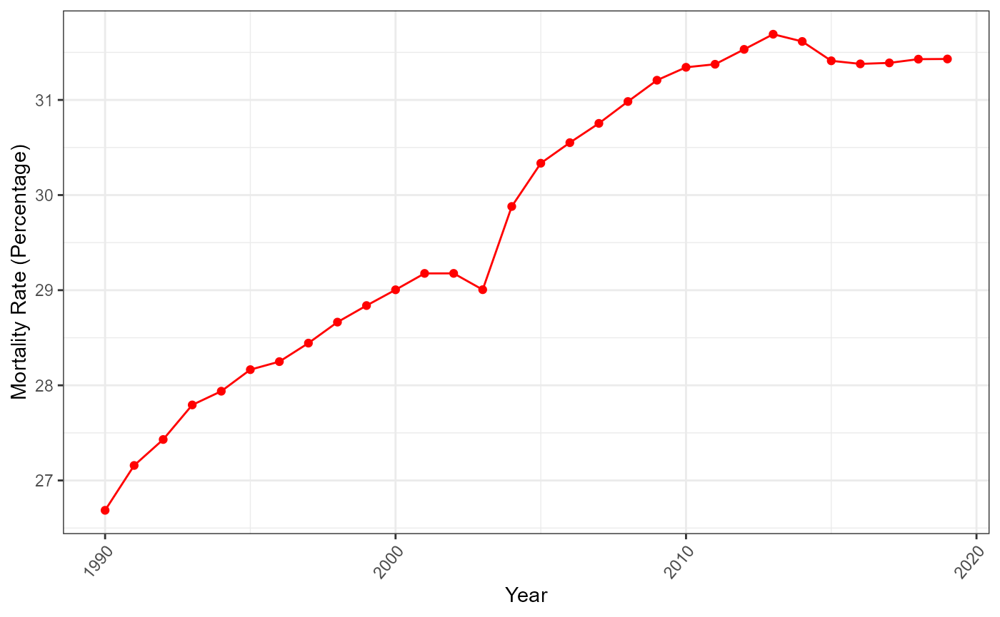

This data set is from Our World in Data and here. It contained the mortality rate of various existing diseases for each country around the world and each year.
This vignette shows you how you can make used of the dataset provided by the packages and use the function provided in the dataset to discover an interesting facts.
Load the dislib package using the library()
function.
Data description
mortality[1:10,]
#> country code continent year disease
#> 1 Afghanistan AFG Asia 1990 Cardiovascular diseases
#> 2 Afghanistan AFG Asia 1990 Neoplasms
#> 3 Afghanistan AFG Asia 1990 Maternal disorders
#> 4 Afghanistan AFG Asia 1990 Chronic respiratory diseases
#> 5 Afghanistan AFG Asia 1990 Digestive diseases
#> 6 Afghanistan AFG Asia 1990 Diabetes mellitus
#> 7 Afghanistan AFG Asia 1990 Lower respiratory infections
#> 8 Afghanistan AFG Asia 1990 Neonatal disorders
#> 9 Afghanistan AFG Asia 1990 Diarrheal diseases
#> 10 Afghanistan AFG Asia 1990 Cirrhosis and other chronic liver diseases
#> mortality_rate
#> 1 24.6294
#> 2 6.3519
#> 3 1.4550
#> 4 3.2623
#> 5 2.7451
#> 6 1.1563
#> 7 13.0540
#> 8 8.5724
#> 9 2.3307
#> 10 1.4661The mortality data set contains information about the
mortality rate across diseases and countries from 1990 to 2019. The
variables provided in this dataset are the following
country: Country namecode: Country code (Alpha-3 code)continent: The continent of each countryyear: Yeardisease: Disease namemortality_rate: Mortality rate in percentage
Since not all the country, year, and disease information is
available. This package has provided the function to see what is
available in the dataset. We can do this using
country_list(), year_list(),
disease_list
country_list()
#> [1] "Afghanistan" "Albania"
#> [3] "Algeria" "American Samoa"
#> [5] "Andorra" "Angola"
#> [7] "Antigua and Barbuda" "Argentina"
#> [9] "Armenia" "Australia"
#> [11] "Austria" "Azerbaijan"
#> [13] "Bahamas" "Bahrain"
#> [15] "Bangladesh" "Barbados"
#> [17] "Belarus" "Belgium"
#> [19] "Belize" "Benin"
#> [21] "Bermuda" "Bhutan"
#> [23] "Bolivia" "Bosnia and Herzegovina"
#> [25] "Botswana" "Brazil"
#> [27] "Brunei" "Bulgaria"
#> [29] "Burkina Faso" "Burundi"
#> [31] "Cambodia" "Cameroon"
#> [33] "Canada" "Cape Verde"
#> [35] "Central African Republic" "Chad"
#> [37] "Chile" "China"
#> [39] "Colombia" "Comoros"
#> [41] "Congo" "Cook Islands"
#> [43] "Costa Rica" "Cote d'Ivoire"
#> [45] "Croatia" "Cuba"
#> [47] "Cyprus" "Czechia"
#> [49] "Democratic Republic of Congo" "Denmark"
#> [51] "Djibouti" "Dominica"
#> [53] "Dominican Republic" "Ecuador"
#> [55] "Egypt" "El Salvador"
#> [57] "Equatorial Guinea" "Eritrea"
#> [59] "Estonia" "Eswatini"
#> [61] "Ethiopia" "Fiji"
#> [63] "Finland" "France"
#> [65] "Gabon" "Gambia"
#> [67] "Georgia" "Germany"
#> [69] "Ghana" "Greece"
#> [71] "Greenland" "Grenada"
#> [73] "Guam" "Guatemala"
#> [75] "Guinea" "Guinea-Bissau"
#> [77] "Guyana" "Haiti"
#> [79] "Honduras" "Hungary"
#> [81] "Iceland" "India"
#> [83] "Indonesia" "Iran"
#> [85] "Iraq" "Ireland"
#> [87] "Israel" "Italy"
#> [89] "Jamaica" "Japan"
#> [91] "Jordan" "Kazakhstan"
#> [93] "Kenya" "Kiribati"
#> [95] "Kuwait" "Kyrgyzstan"
#> [97] "Laos" "Latvia"
#> [99] "Lebanon" "Lesotho"
#> [101] "Liberia" "Libya"
#> [103] "Lithuania" "Luxembourg"
#> [105] "Madagascar" "Malawi"
#> [107] "Malaysia" "Maldives"
#> [109] "Mali" "Malta"
#> [111] "Marshall Islands" "Mauritania"
#> [113] "Mauritius" "Mexico"
#> [115] "Micronesia (country)" "Moldova"
#> [117] "Monaco" "Mongolia"
#> [119] "Montenegro" "Morocco"
#> [121] "Mozambique" "Myanmar"
#> [123] "Namibia" "Nauru"
#> [125] "Nepal" "Netherlands"
#> [127] "New Zealand" "Nicaragua"
#> [129] "Niger" "Nigeria"
#> [131] "Niue" "North Korea"
#> [133] "North Macedonia" "Northern Mariana Islands"
#> [135] "Norway" "Oman"
#> [137] "Pakistan" "Palau"
#> [139] "Palestine" "Panama"
#> [141] "Papua New Guinea" "Paraguay"
#> [143] "Peru" "Philippines"
#> [145] "Poland" "Portugal"
#> [147] "Puerto Rico" "Qatar"
#> [149] "Romania" "Russia"
#> [151] "Rwanda" "Saint Kitts and Nevis"
#> [153] "Saint Lucia" "Saint Vincent and the Grenadines"
#> [155] "Samoa" "San Marino"
#> [157] "Sao Tome and Principe" "Saudi Arabia"
#> [159] "Senegal" "Serbia"
#> [161] "Seychelles" "Sierra Leone"
#> [163] "Singapore" "Slovakia"
#> [165] "Slovenia" "Solomon Islands"
#> [167] "Somalia" "South Africa"
#> [169] "South Korea" "South Sudan"
#> [171] "Spain" "Sri Lanka"
#> [173] "Sudan" "Suriname"
#> [175] "Sweden" "Switzerland"
#> [177] "Syria" "Taiwan"
#> [179] "Tajikistan" "Tanzania"
#> [181] "Thailand" "Timor"
#> [183] "Togo" "Tokelau"
#> [185] "Tonga" "Trinidad and Tobago"
#> [187] "Tunisia" "Turkey"
#> [189] "Turkmenistan" "Tuvalu"
#> [191] "Uganda" "Ukraine"
#> [193] "United Arab Emirates" "United Kingdom"
#> [195] "United States" "United States Virgin Islands"
#> [197] "Uruguay" "Uzbekistan"
#> [199] "Vanuatu" "Venezuela"
#> [201] "Vietnam" "Yemen"
#> [203] "Zambia" "Zimbabwe"
disease_list()
#> [1] "Cardiovascular diseases"
#> [2] "Neoplasms"
#> [3] "Maternal disorders"
#> [4] "Chronic respiratory diseases"
#> [5] "Digestive diseases"
#> [6] "Diabetes mellitus"
#> [7] "Lower respiratory infections"
#> [8] "Neonatal disorders"
#> [9] "Diarrheal diseases"
#> [10] "Cirrhosis and other chronic liver diseases"
#> [11] "Tuberculosis"
#> [12] "Chronic kidney disease"
#> [13] "Alzheimer's disease and other dementias"
#> [14] "Parkinson's disease"
#> [15] "HIV/AIDS"
#> [16] "Acute hepatitis"
#> [17] "Malaria"
#> [18] "Nutritional deficiencies"
#> [19] "Meningitis"
#> [20] "Protein-energy malnutrition"
#> [21] "Enteric infections"For the year_list() function, you need to provide the
country to see the year available.
year_list("Australia")
#> [1] 1990 1991 1992 1993 1994 1995 1996 1997 1998 1999 2000 2001 2002 2003 2004
#> [16] 2005 2006 2007 2008 2009 2010 2011 2012 2013 2014 2015 2016 2017 2018 2019Examples usage
Top 10 higest mortality rate in the Australia for 2019
There are two main types of disease, Non-communicable and
Communicable diseases. Non-communicable diseases (NCDs) it is a diseases
that can not be passed on from person to person, while communicable
diseases can spread from person to person. Now let’s see the types of
diseases in 2019 that are the most deadly in the world. We will have a
look at the top ten diseases in Australia for 2019 using the function
dis_summary().
dis_summary("Australia", 2019)
#> # A tibble: 10 × 3
#> Rank disease Mortality_rate
#> <dbl> <chr> <dbl>
#> 1 1 Neoplasms 31.4
#> 2 2 Cardiovascular diseases 30.2
#> 3 3 Alzheimer's disease and other dementias 6.58
#> 4 4 Chronic respiratory diseases 6.56
#> 5 5 Digestive diseases 3.88
#> 6 6 Chronic kidney disease 3.05
#> 7 7 Lower respiratory infections 2.50
#> 8 8 Diabetes mellitus 2.48
#> 9 9 Parkinson's disease 1.41
#> 10 10 Cirrhosis and other chronic liver diseases 1.30From this data frame, we can see that the diseases which have the highest mortality rate in Australia are Neoplasms, then Cardiovascular diseases. These two diseases are the NCDs, which shows that the impact of NCDs is larger than how it is currently portrayed in society nowadays.
Impact of the Neoplasms diseases overtime in Australia
We can further analyze the impact of the Neoplasms disease over time
using the function plot_dis().
plot_dis("Neoplasms", "Australia")
We can see that the trends are increasing over time, which is very concerning as this shows that there is not enough effort put into developing the treatment needed for this disease.